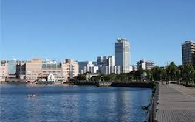

City 1
As of June 2012, the city has an estimated population of 414,960 and a population density of 4,120 people per km2. The total area is 100.7 km2. Yokosuka is the 11th most populous city in Greater Tokyo, and the 12th in the Kantō region.
City 2
As of June 2012, the city has an estimated population of 414,960 and a population density of 4,120 people per km2. The total area is 100.7 km2. Yokosuka is the 11th most populous city in Greater Tokyo, and the 12th in the Kantō region.
City 3
As of June 2012, the city has an estimated population of 414,960 and a population density of 4,120 people per km2. The total area is 100.7 km2. Yokosuka is the 11th most populous city in Greater Tokyo, and the 12th in the Kantō region.
City 4
As of June 2012, the city has an estimated population of 414,960 and a population density of 4,120 people per km2. The total area is 100.7 km2. Yokosuka is the 11th most populous city in Greater Tokyo, and the 12th in the Kantō region.